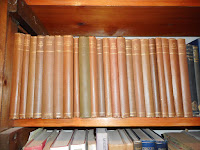

 |
| Mum's Arden Shakespeare, coveted since I was a child. Out of their box and onto my shelf |
{kind=link}
To be left someone’s books is a wonderful thing.
It's possible that as we emerge from Christmas holiday excesses and make earnest NY resolutions about de-toxing, de-cluttering, de-fragmenting (or waddever) some readers may already be clutching their frontal lobes and wailing "No Space…!" "No Time…!" I don't care. This is a statement. Not a assertion or a thesis. The only qualification I'll allow is that the books may need to have belonged to someone you love...
It's possible that as we emerge from Christmas holiday excesses and make earnest NY resolutions about de-toxing, de-cluttering, de-fragmenting (or waddever) some readers may already be clutching their frontal lobes and wailing "No Space…!" "No Time…!" I don't care. This is a statement. Not a assertion or a thesis. The only qualification I'll allow is that the books may need to have belonged to someone you love...
Our house is Cluttersville Central. My daughter found me sitting on the back kitchen floor a year or two ago, weeping helplessly “Why, oh why do we have 38 pairs of
Wellington boots?” Her immediate solution was to order a skip. Yet we still possess 13* guitars, 92 tea
towels and a quantity of yellowing sheet
music which stretches back to the collection that had been abandoned in the stool of the piano my mother brought when I was six years old (that’s 1960, if you need to do the maths). I set myself to
rationalise our music shelves in a pre-Christmas burst this year and found
myself unable even to throw away five different sets of ABRSM Grade One Scales and Broken Chords (though
I did successfully demote them to a storage box).
 |
| Compiled from forgotten diaries, letters, photo, memorabilia found in an unfrequented corner of our attic |
“No thanks Mum, I don’t want my house to get like yours,” would
be any of my older children’s response if I suggested they might like to
re-possess some of their out-grown stuff (books included). It’s a standing joke that
my beloved Francis finds himself unable to forgive his mother (veteran of constant military house-moves) for disposing
of his Hornby Dublo railway set when he was a metropolitan sophisticate of the 1980s. “Well, I’d offered it back to him and it had been years in
the garage roof,” she said in her own defence – and I was awed by her intrepidity but knew I could never emulate such ruthlessness.
Francis phoned from Australia while I was writing this
and gladly contributed his late father’s moment of glory when the spout of the current
Teasmade (“once common in the United Kingdom
and some of her former colonies” explains Wikipedia) broke and he was able to replace it from defunct
version that his mother had been led to believe he’d thrown away some five years earlier. Although this hasn't made life easy for his executors I'm sure they feel fully repaid by their admiration for the sheer quantity of obsolete junk he so assiduously squirreled away.
| Unearthed while establishing the Ingatestone Bookshop. Pride of place in our entrance hall now. |
{kind=link}
I cherish the long established boatyards that
have no need to search the internet for classic fittings of yesterday but merely
dig down through archaeological layers until
they emerge with the precise shackle (imperial gauge) that they reckoned
they’d laid down some fifty year ago. I am forever grateful to the late Frank Knights of Woodbridge who salted away the last half dozen tins of "Peter Duck green" when he heard that the manufacturer was discontinuing it -- although the yacht herself was in Russia and not expected to return. The village bookshop I opened in 1979 was on the site of a diary supply and domestic hardware shop that had been managed on similar principles and, although I felt it was a little harsh of Francis to point out via Facebook last year that we still appeared to be using the same tin of wax polish that I'd gleaned then, I can't deny that there was considerable scope for salvage.
Nevertheless, such was the trauma Francis suffered when he lost 4000-5000 books and all the
articles, clippings, memorabilia of a pre-dropbox writer’s life in a fire in annus
horribilis 2012 that I can solemnly promise that I have NOT taken advantage
of his Australian absence to dispose of as much as a jam-jar during these last weeks (well, almost …). What
I have been doing is re-organising
the music room, which is also my office (yes, absent Archie, we still have 13* guitars,
only 4 which are playable + 2 broken but resplendent accordions belonging to my former husband who bade me farewell more than thirty years ago). I've had a blissful time getting
years of inherited books out of boxes and knocking decades of dust off the
rest. The moth-eaten, cat-peed,
flat-as-a-pancake Wilton carpet that has followed me around since my parents left Woodbridge
in the 1960s has not gone, you understand, but has been demoted to underlay.
The true joy is not the new wool-acrylic beige mix
that the fitter assures me should last "at least 15 years" (pshaw!) but the time
that I’ve been spending with some of my inherited books. Nothing will ever surpass the moment
last year when I discovered my father’s 1939 diary, a suitcase of RNVR papers and
the typescript that became The Cruise of Naromis: August in the Baltic 1939 but here are some grace notes, unintended, corroborating evidence from my father's life, that have touched me once again.
{kind=link}
{kind=link}
First a copy of The Jongleur (spring 1939), the privately
printed poetry magazine that gave Dad his first moment in print.
{kind=link}
| HMS Forth |
Then a copy of The Bedside Book (first cheap edition November 1939)
with the pencilled inscription HMS
Forth.
And finally a copy of Walter de la Mare’s Collected Rhymes and Verses, annotated "Waldringfield 1948". If he’d scribbled in red felt tip HUZZAH, I MADE IT! the message could not have been more welcome. The experience of war for this Suffolk farmer’s lad had enabled him to discover who he was and where he wanted to be. Naromis ends
{kind=link}
{kind=link}
So, last week, on January 5th 2018, when Dad would have been 100, if he'd lived, I left my polishing and my re-arranging and spent some time in the place that meant so much to him, always.
| Looking across the River Deben to Stonor Point and the Tips 5.1.2018 |
{kind=link}
* Guitar figure revised after a recount which established that there were empty cases (empty apart from Archie's jury service papers that is.) Two outgrown violins, a viola, a saxophone, two flutes and 10 recorders have asked that their existence be taken into consideration. Most are now re-stacked under the piano for the next umpteen years or so in the congenial company of three amplifiers (only one working) and a box of broken music stands which I keep in the hopes that I might put enough bits together to make one that is reliable. Francis's father would understand.